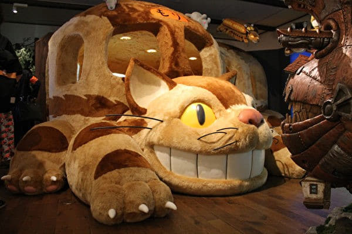
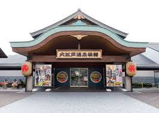
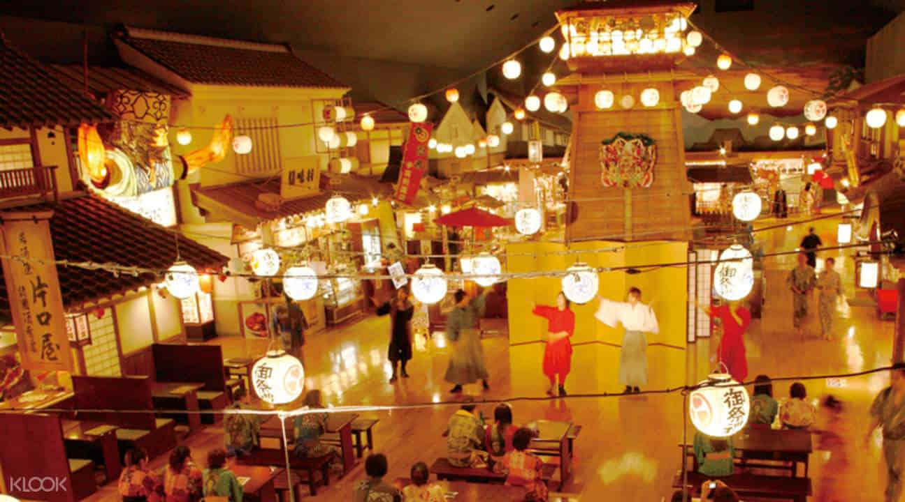
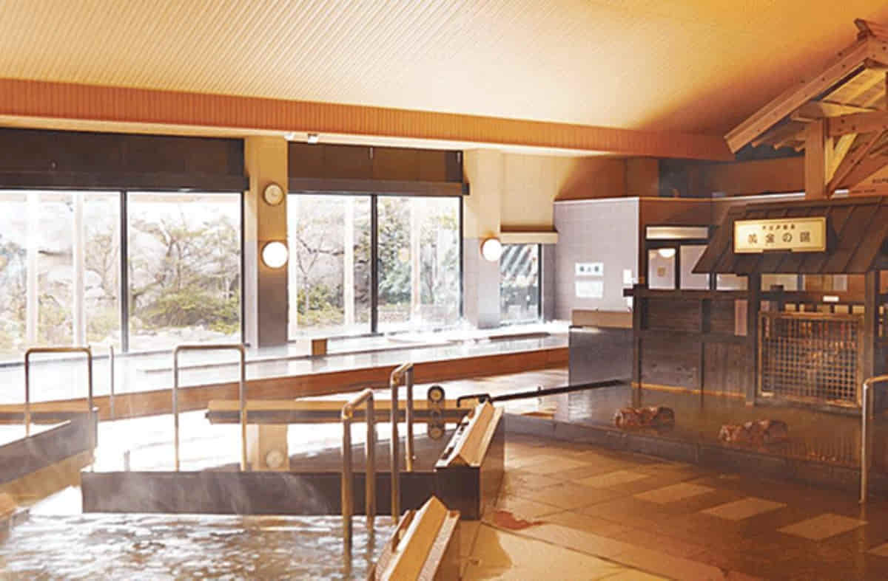

1. 지브리 스튜디오

도쿄도 미타카 시의 이노카시라 공원 안에 위치한 미술관 미야자키 하야오 감독이 직접 디자인해서 만든 곳입니다. 2001년 10월 1일 개관하였고
입장권으로 감열지를 쓰는 다른 박물관과는 달리 입장권이 필름 모양이라 반응이 좋다고합니다.
아이들 취향에 맞춘 전시들이 많이 있으며 일본에서도 부모들이 아이들을 데리고 온 경우가 많습니다. 상설 전시와 일부 특별전시가 있으며, 안에 기념품점과 간단히 먹을 것이 있습니다.
내부 촬영은 원칙적으로 금지이며, 옥상 정원에 있는 천공의 성 라퓨타 관련 동상은 사진 촬영이 가능해 인증샷을 찍는 곳으로 인기가 좋습니다. (줄이 매우 길게 서있습니다.)
오시기 전에 예약은 필수이며 일본에선 로손 편의점에서 예약할 수 있고 한국에서는 하나투어에서 예약 가능합니다.
(개관시간 : 10:00 ~ 18:00 / 정기휴일 : 매주 화요일
가격 : 성인기준 1000엔)
2. 도쿄 디즈니랜드
일본에 있는 디즈니랜드. 이름은 도쿄 디즈니랜드지만, 실제로는 지바현 우라야스시에 있습니다.
1983년에 개장했으며, 826,000㎡의 부지에 미국의 디즈니랜드를 재현한 테마파크입니다. 시설 내용이나 운영은 미국의 디즈니랜드와 같지만, 32개의 시설 가운데 2가지는 일본 관객을 위하여 새로 개발한 것입니다.
디즈니랜드는 정확하게는 어뮤즈먼트 파크(놀이동산)가 아니라 테마파크입니다. 즉, 스릴 넘치는 화끈한 놀이기구를 생각한다면 실망할 수도 있습니다.
도쿄 디즈니 리조트의 차별화라면 바로 디즈니 씨(SEA)입니다. 이름에서 드러나듯 디즈니와 바다를 테마로 한 오리지널 테마파크인데, 특히 야경이 멋집니다. 실제 바닷물을 끌어온 데다가 베네치아의 곤돌라도 재현해놔서 타볼 수 있는 등 디즈니 캐릭터에 별로 흥미가 없는 사람은 차라리 디즈니 씨가 더 낫다는 평도 있습니다.
기간마다 다양한 이벤트가 있으니 알아보시고 맞춰 찾아가시는 것을 추천 드립니다.
1day 패스포트 가격 : 성인 - 7400엔 / 청소년 - 6400엔 / 어린이 4800엔
3. 오오에도온천




일본 여행을 가신다면 온천은 한번 가봐야 된다고 생각합니다. 도쿄에도
유명한 온천이 있는데 그곳은 오다이바에 있는 온천 테마파크 오오에도 온천입니다.
오오에도 온천은 온천 테마파크로 다양한 즐길거리가 있습니다.
입관시 바코드가 인식되어 있는 리스트 밴드를 받습니다. 그것으로 음식이나 기념품 등을 구입하고 퇴관시 정산하는 시스템입니다.
입관 절차 후 일본 전통복인 유카타를 원하는 색을 골라 입고 내부를 돌아다닐 수 있습니다. 내부는 마치 에도시대에 온듯한 기분을 들게하는 거리 모습으로 인테리어 꾸며놨습니다.
온천은 남녀 합쳐서 13종류가 있으며 100인탕, 네유탕, 노천탕, 오케부쿠로 등등 다양한 욕탕이 있으며 탕의 물은 지하 1400M에서 나오는 천연 온천수 입니다.
또한 정원으로 나오면 운치를 즐기면서 족욕을 할 수 있습니다.
내부에는 일본 특색의 다양한 식사코너가 위치해있어 앞서 지급받은 리스트 밴드로 결제하여 이용가능합니다. 또한 식사코너 뿐만아니라 닌자 표창던지기, 닌자 구슬굴리기등 다양한 놀이를 체험해 볼 수 있습니다.
입장권 (성인기준) : 평일 - 2280엔 / 토요일,경축일 2480엔
이용시간 : 오전 11시 ~ 다음날 오전 9시